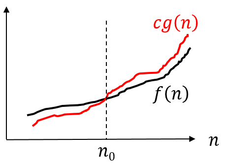
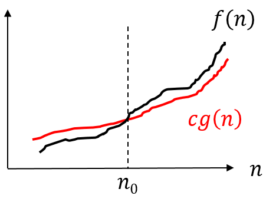

시간 복잡도
시간 복잡도¶
알고리즘 효율성¶
-
알고리즘의 효율성은 알고리즘이 실행되는 동안에 필요한 컴퓨팅 자원(비용)으로 표현한다.
- CPU, Memory, . . .
-
효율성이 좋다는 것은 복잡도(complexity)가 낮다는 것이고, 효율성이 나쁘다는 것은 복잡도가 높다는 의미이다.
- 시간 복잡도와 공간 복잡도가 주로 사용된다.
-
문제의 크기가 커질 수록 비용이 어느 정도 증가하는지를 근사적으로 표현한다.
-
알고리즘의 시간 효율성을 보기 위해 실행 시간을 측정할 수 있다.
- 실험적으로 측정 : 특정 입력에 대해 실제 실행 시간 측정
- 분석적으로 측정 : 입력 크기에 대해 어느 정도의 계산 작업이 필요한지 측정
점근적 표기(Asymtotic Notation)
- 알고리즘의 실행 시간은 분석적으로 측정해서 시간 함수를 구해서 점근적으로 표현한다.
- 함수들의 집합을 정의하는 방법을 사용한다.
대표적인 표기 방법:
- Big O : O(n)
- Omega : \Omega(n)
- Theta : \Theta(n)
예를 들어, 알고리즘 A 가 O(n^2) 이다. 이는, A 의 실행시간 함수가 f 라면, f \in O(n^2) 라는 것을 의미한다.
Big O¶
- O(f(n)) 집합은 f(n) 보다 빠르게 증가하지 않는 함수들의 집합을 의미한다. Big O 표기는 함수의 상한을 나타내기 위해 사용한다.
-
f(n) 에 대한 입력 크기 n 이 (무한히) 증가함에 따라 f(n) 의 값이 얼마나 빠르게 증가하는지 나타낸다.
-
점근적 증가율(asymptotic growth rate)
-
함수 f(n) 이 O(g(n)) 의 원소라 것을 표현하기 위해 f(n) = O(g(n)) 이라 표기한다.
-
f(n) \in O(g(n)) 의 의미
-
모든 n(n \ge n_0) 에 대해 f(n) \le cg(n) 을 만족하는 c, n_0 가 존재한다.
- 10n + 3 \in O(n^2) (O)
- n^2 \in O(20n) (X)

자주 사용되는 Big O 표기들¶
다음 표는 자두 사용되는 대표적인 Big O 표기법들과 잘 알려진 알고리즘들이다.
| 분류 | 예 |
|---|---|
| O(1) | 해싱 |
| O(n) | 순차 검색 |
| O(\log_2 n) | 이분 검색 |
| O(n \log_2 n) | 퀵 정렬 |
| O(n^2) | 선택 정렬 |
| O(n^3) | 플로이드-워샬 |
| 2^n, 3^n . . . | 부분집합 |
| n!` | 순열 |
\Omega¶
- 최선의 경우
-
f(n) 은 \Omega(g(n)) 의 의미
-
모든 n(n \ge n_0) 에 대해 f(n) \ge cg(n) 을 만족하는 c, n_0 가 존재한다.

\Theta¶
- 최선과 최악의 경우과 같을 경우에 사용한다. 따라서, Big O 로 간주해도 된다.
- \Theta(g(n)) = O(g(n)) \bigcap \Omega(g(n))
- \Theta(g(n)) 은 f(n) 과 동일하게 증가하는 함수들의 집합